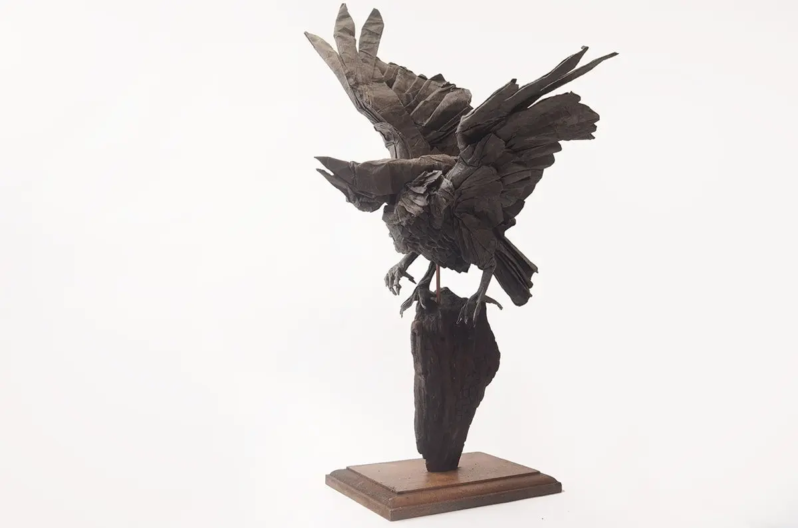

Origami Designs
About Us
Follow Us
Press on the Origami to see how it is made!!!!
Interesting Facts about Phoenix
- The phoenix is a long-lived, immortal bird associated with Greek mythology that cyclically regenerates or is otherwise born again.
- Associated with the sun, a phoenix obtains new life by arising from the ashes of its predecessor.
Interesting Facts about Yatagarasu
- Yatagarasu is a 3-legged crow also from Japanese mythology.
- This design by Satoshi Kamiya is pretty popular but this is easily the cleanest and best looking fold of this model I’ve ever seen.
The three feet and claws look fantastic and I love the pose here as well.
Interesting Facts about Unicorn
- Here we have a fantastic unicorn by Daniel Chang.
- It’s all folded from a single square of paper, the overall shapes of this model as well as the post are excellent.

Interesting Facts about Scaled Winged Kirin
- This model is absolutely incredible.
It’s folded from a single 80cm x 80cm square of paper and must have taken forever to fold all the individual scales which aren’t part of the original design.
- The head is probably my favourite part about this model but the wings, tail, legs, body and whole thing looks incredible.
Interesting Facts about God of Thunder
- I’ve always loved this model of the thunder god Raijin from Japanese mythology and it’s folded absolutely beautifully here.
- It’s all from one 60cm x 60cm square of paper and I have no idea how you can make a ring around the head like that.
Interesting Facts about Kyubi
- Quentin Trollip used his fantastic animal designing skills to design this great little nine-tailed fox, another creature from Japanese mythology.
- It’s folded from a single square of paper and I really love the colour changes in the design, especially on the head.
Interesting Facts about Cerberus
- This is a fantastic, beautiful and clean fold of Satoshi Kamiya’s excellent design of Cerberus
- the 3-headed dog creature from Greek mythology that guards the gates to Hades.

Interesting Facts about Yatagarasu
- Kei Watanabe also designed an amazing and super complicated Yatagarasu model. Everything about this is super impressive.
Interesting Facts about Hell Hound
- I really like this Hell Hound design, especially the head.
- The paper used here is great and I also quite like how it almost looks like there are flames on the back.
- Designed and Folded by Choi Ju Young

Interesting Facts about The Divine Boar Inoshishigami
- There are a lot of Japanese mythology themed models in this post.
- This is the Divine Boar Inoshishigami and this is probably the best fold I’ve ever seen of this model.
- The head looks really awesome, especially the eye.
- Designed by Satoshi Kamiya and Folded by Reaper
Interesting Facts about Little Devil/Devil Fork
- Hiroaki Kobayashi designed this fantastic group of little paper devils.
Each one of them is made from a single square of paper and the fork itself though is a separate square of paper.
- Designed and Folded by Hiroaki Kobayashi